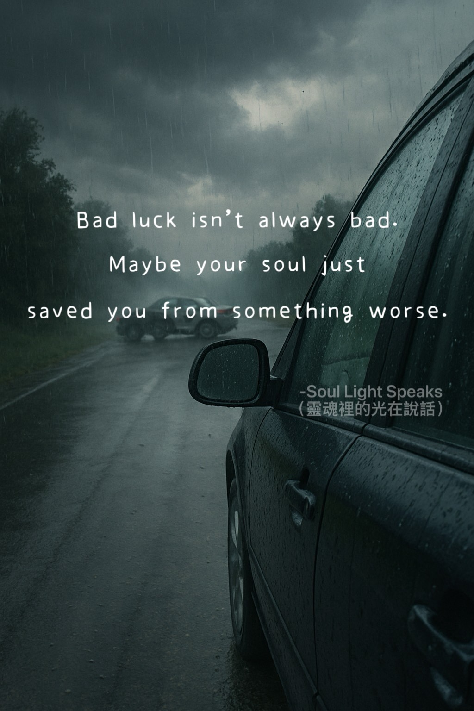

Bad luck is not always bad.
Maybe your soul just saved you from something worse.
Maybe your soul just saved you from something worse.
When life suddenly slips out of control,
you might think It is just a moment of confusion.
But the soul knows—
it may not be a bad thing at all.
Maybe those few seconds of confusion
quietly shifted your path,
and without you even realizing it,
may have saved you from something far worse.